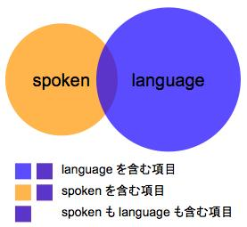

【Basic】スペース区切りで AND 検索！
■ 『英辞郎 on the WEB for iPhone』では、
スペースで区切られた複数のキーワードで英和検索する
と、それらの複数のキーワード（またはそれらに前方一致する単語）のすべてをどこかに含む項目をすべて検索します。
「◯◯◯ と（AND） △△△ を含む検索」ということで AND 検索と呼びます。
■ 例えば、『英辞郎 on the WEB for iPhone』で spoken language
というキーワードで
検索を実行すると、
spoken
と language
にぴったりマッチ（完全一致）する項目、またはそれぞれのキーワードで始まる（前方一致）単語を項目見出しのどこかに含むもの
が検索結果として表示されます。ベン図で表すと以下のようになります。

この図で言えば、「spoken も language も含む項目」の部分が、この AND 検索の検索結果となります。
● 具体的には、
- spoken language
- spoken language
of the present-day speakers of
English
……といった検索キーワード（ie. spoken language）どおりに並んでいる項目はもちろん、
- spoken-language
translation
……のようにspoken
と language
がハイフンで接続されたものを含む項目、
- development
of spoken
English language
skills
……
のように spoken
と language
の前後や間に別の語が含まれている項目、
- language spoken
between computers to
- learn
the language spoken
in
……
といった spoken
と language
の順番が逆転している項目、
- number
of languages spoken
in the world
- nation
where many languages are spoken
…… などの spoken
と language
で始まる単語をどこかに含んだ項目を検索結果として表示します。
■ 『英辞郎 on the WEB for
iPhone』の収録項目数は非常に多く、基礎レベルの単語やいろいろな意味を持つ単語（多義性の高い単語）で検索すると、相当数の検索結果が表示され
（例えば、act で検索すると、15,000
件以上）、どこに自分にとって必要な項目が紛れ込んでいるのかがわかりにくくなってしまいます。
そんなときには、何かもう 1
語（1 語ではなく、1 字でも構いません）、スペースで区切って入力して検索してみてください。検索結果がかなり絞り込まれて、お目当ての項目を探し出すのが簡単になるかもしれません。